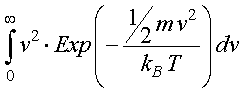
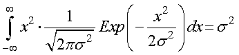
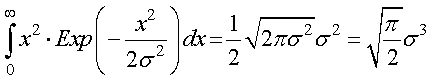
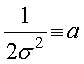
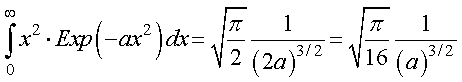
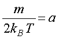
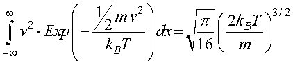

さて，分子は，

でした．ややこしい積分ですね．．．ただ．．．よく見ると，積分の中身は，
変数の二乗 × 正規分布
ですよね？つまり．．．
正規分布の二乗平均
を行っていることになります（全領域ではなく，半分ですが）．そうなると簡単ですね．つまり，

となります．領域を半分にして整理すれば，

となります．

とおけば，

となります．ここで，

と対応づけられますので，

と生物学におけるランダムウォーク の日本語版のp.73の(5.8)式の分子となります．
後は，その割り算なので，
と等分配の法則を導き出すことができました．